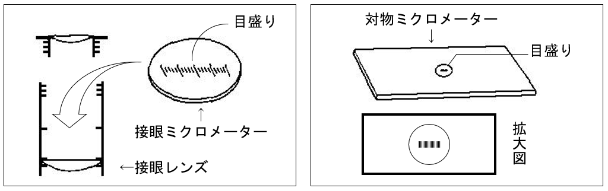
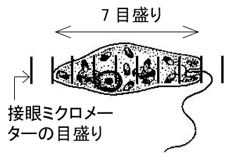
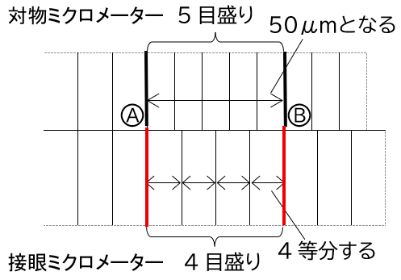

①原核・真核細胞
①-1【演習】
②原核細胞の構造
③代謝・同化・異化
④ATPとADP
④-1【演習】
⑤細胞の発見と顕微鏡名称
⑥顕微鏡の使い方
⑥-1【演習】
⑦ミクロメーター
⑦-1【演習】
質問する
TIME:
0.0s
記録なし
🖨️ 印刷
📢
解説を聴く
音量
100%
「チャレンジ開始」をクリックしてください。
🔬 生物基礎：ミクロメーターの取り付けと計測
① ミクロメーターの取り付けと計測


接眼ミクロメーターと対物ミクロメーターをとりつけます。
対物ミクロメーターには 1 目もり
マイクロメーター
μm の線が刻んであります。
接眼ミクロメーターと対物ミクロメーターの線がぴったり重なるところ 2 区間をみつけます。
接眼ミクロメーター 1目もりが何 μm なのかを計算します。
対物ミクロメーターをはずし，対象物のあるプレパラートにおきかえます。
接眼ミクロメーターをもとに，対象物の大きさを計算します。
【注】1 μm ＝
m （100 万分の 1 mm）
② 問）次の対物ミクロメーターと接眼ミクロメーターについて各問いに答えよ。
（1）対物ミクロメーターと接眼ミクロメーターの A・B の線が重なった。接眼ミクロメーターの 1 目もりは何 μm か。

解）対物ミクロメーター A〜B 間は
μm
接眼ミクロメーター 1 目もりは
μm ÷
＝
μm
（2）（1）の接眼ミクロメーターで観察した次図のミドリムシの長さは何 μm か。
解）
μm × 7 ＝
μm
③ 重要公式
【重要】
接眼ミクロメーターの 1 目盛り＝
対物ミクロメーターの目盛り
接眼ミクロメーターの目盛り
×
μm
【暗記】
ミクロメーターは
対
÷
接
×
μm
ゴロ ミクロメーターは
大切
（
対
÷
接
）
チャレンジ開始！
答え合わせ
お手本に戻す